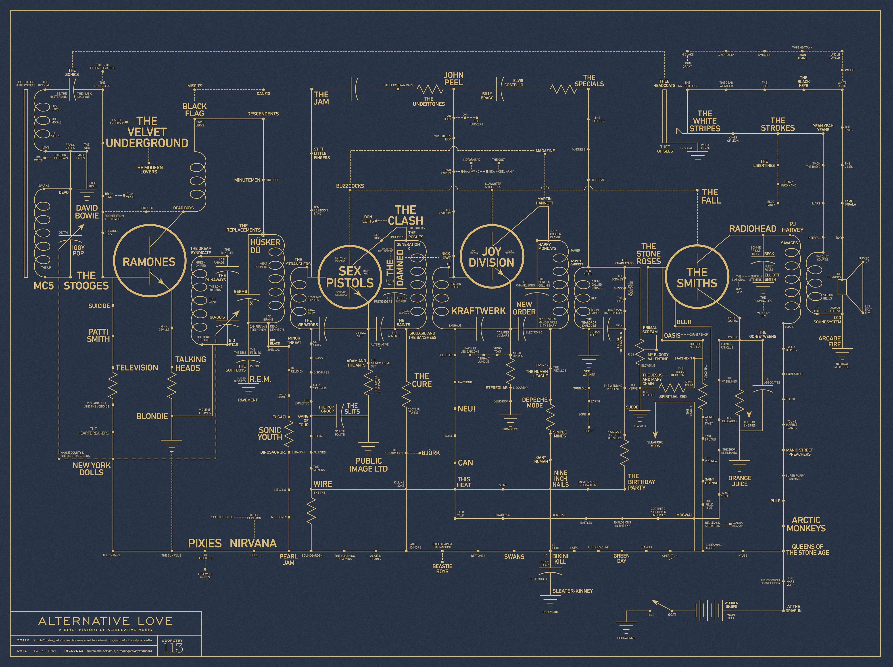
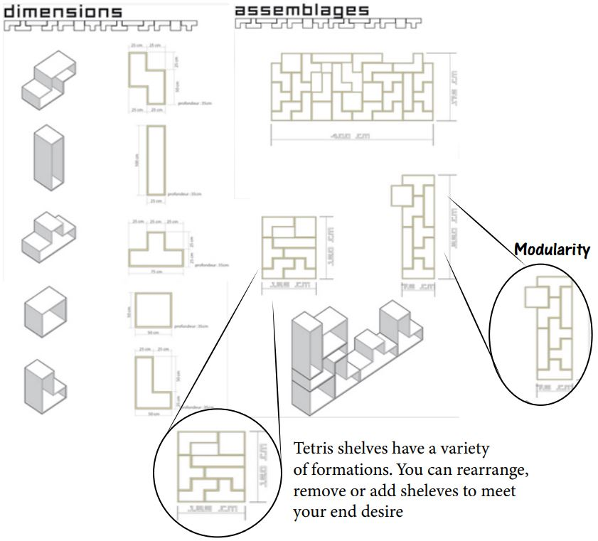

From what I know, the definition of a system is an organization/organized collection of several parts that work, interact and integrate to fulfill a goal. Systems usually consist of multiple parts, and if one part is changed, the overall system is changed as well. For example, company management have hierarchies, composed of management, managers, chairmens, presidents, board of directors, etc. Some systems can be straightforward while others may be more complex. Some examples of what a system may not be could be organizations who work competitively towards a goal. For example the system conflict theory of criminal justice. Another simpler example could be a pile of sand, where if you remove a particle of sand, you’re still left with a pile of sand.
(1) Modularity is the concept that determines how replaceable or interchangeable components of a system are. For example, certain computer softwares is modular if code can be added or removed as see fit. (2) Decomposability refers to breaking down matter into smaller elements or compounds. For example, atoms are decomposable into protons, electrons, neutrons, and particles. (3) Emergence means that we can find new laws and structures that arise out of the complexity of different scales; the whole is greater than the sum of its parts. For example, ants who build bridges as a whole. Typically each individual ant follows the same behavioral rules, but the moment the ground collapses in front of them they begin building structures through large scale coordinated behavior.(4) The chaos theory (aka the butterfly effect) is quite ironic really; it's the science of predicting unpredictable inputs.It’s the idea that order and chaos aren’t completely opposite. For example in our economic system, a change in consumer behavior can result in unexpected consequences or downfall for the whole system.
Tessellation is a dataset or surface of polygons, or combination of various geometric shapes; typically repeated until covering an entire plate; aka tiling. An example could be the Louvre Pyramid in Paris, France or even the patterns/prints on the sole of our shoes.
The ideas of modularity and tessellation both follow the concept of variety in shapes and design, however they certainly have their differences. In my opinion, the ideas of modularity offer more freedoms in terms of shape, configuration, and certainly space. One can rearrange and remove as they please to create a modular design. However, with tessellation, the shape(s) is repeated and must be done without leaving space between each shape, resulting in fewer outcomes (compared to modularity).
The difference between designing something that has complexity vs being uniform I would say is the mindset, however both can be found to be difficult. When designing something of complexity, by definition it is intricate and/or complicated and may require more experience, both physically and mentally, in order to reach that state of convolution. This can result in longer usage of time. When designing something of uniformity, it may lack diversity and having overall “sameness.” This may result in being pleasant to the eyes. However, although this style of homogeneity may be “simpler” sometimes simple can be complex depending on whether one strives for difference amongst other uniform designs.
2 system diagrams that have more than 100 elements
2 system diagrams that is something considered living
2 system diagrams that represent something that is not visible or physical
.jpg)
2 system diagrams that represent a system that incorperates modularity
Modularity
Decomposibilty
Emergence
Chaos Theory